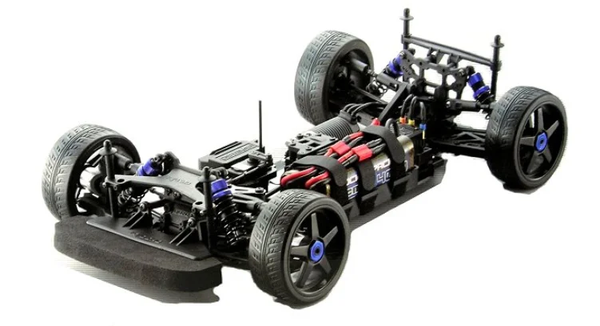

京商 インファーノGT2 VE

引用元画像：京商公式サイト
📋 基本情報
| メーカー | 京商（Kyosho） |
|---|---|
| 機種名 | インファーノGT2 VE（Inferno GT2 VE） |
| シャーシ略称 | インファーノGT2 VE |
| 型番 | 30935, 30936, 30937, 30938, 30940, 34102, 34103B, 34017（ボディ別） |
| 発売時期 | 2012年（初期モデル）～2019年（最終モデル） |
| 価格 | 詳細不明 |
| 生産状況 | 生産終了 |
| カテゴリー | ラジコンカー（1/8スケール 電動RCカー） |
| サブカテゴリー | GTツーリングカー（4WD オンロード・電動） |
| シリーズ | インファーノGTシリーズ 電動版 |
📏 シャーシスペック
| 全長 | 詳細不明 |
|---|---|
| 全幅 | 詳細不明 |
| 全高 | 詳細不明 |
| ホイールベース | 詳細不明 |
| トレッド | 詳細不明 |
| タイヤ幅/径 | 詳細不明 |
| フレーム | プレート式シャーシ（高剛性設計） |
| 全備重量 | 詳細不明 |
⚙️ 駆動系
| 駆動方式 | 4WDシャフトドライブ |
|---|---|
| デフギヤ | ギヤデフ（標準装備） |
| ギヤ比 | 詳細不明 |
| ギヤピッチ | 詳細不明 |
| トランスミッション | 詳細不明 |
| ドライブシャフト | ドッグボーン式ドライブシャフト |
| モーター | ブラシレスモーター対応 ※2019年モデルはKyosho Speed House TORX8 ブラシレスモーター搭載 |
| ESC | ※2019年モデルはBRAINZ8 ESC搭載 |
🔧 サスペンション
| 形式 | 4輪ダブルウィッシュボーン独立懸架 |
|---|---|
| サスアーム | 詳細不明 |
| ダンパー | オイルダンパー×4本 ※コイルスプリング式 |
| ステアリング | 詳細不明 |
| ベアリング | フルボールベアリング装備 |
💡 特徴
インファーノGT2の電動バージョン
- 2012年にリリースされた電動GTツーリングカー
- GT2シャーシをベースに電動化
- ブラシレスモーター対応の高性能設計
- プレート式シャーシで高剛性を維持
長期にわたる豊富なバリエーション
- 2012年：Audi R8 LMS（30935）、Vitaphone Racing Team Aston Martin Racing DBR9 No.53（30936）、Ceptor（30937）、2007 Chevrolet Corvette C6-R（30938）
- 2014年：458 Italia GT2（30940）
- 2017年：Audi R8 LMS Red（34102）with KT-331P
- 2018年：Dodge Challenger SRT Demon（34103B）with KT-331P
- 2019年：Dodge Challenger SRT Demon Go Mango（34017）with TORX8ブラシレスモーター & BRAINZ8 ESC
電動ならではの特徴
- メンテナンスフリーな電動パワーユニット
- 静粛性の高い走行
- ブラシレスモーターによる高効率・高パワー
- ギヤデフによる精密な駆動力伝達
- オイルダンパーによる安定した走行性能
- Race Spec仕様で高い競技性能
🔧 ぽすとそに工房での修理実績
修理難易度
★★★★★（非常に難しい）
生産終了しており、パーツがたまにしか出てこないため、修理には高度な技術と代替パーツの知識が必要です。
よくある故障・注意点
- パーツ入手困難：生産終了により純正パーツの入手がたまにしか出来ない
- ギヤデフの摩耗：長期使用でギヤデフの精度が低下
- オイルダンパーのオイル漏れ：経年劣化によるシール不良
- ドライブシャフトの摩耗：高負荷時の摩耗に注意
- ベアリングの固着：長期保管時の注意が必要
- 電動系統のトラブル：モーターやESCの故障に注意
修理のポイント
- 互換パーツの活用：GT3やインファーノMP9系の一部パーツが流用可能な場合あり
- ギヤデフのメンテナンス：定期的なグリスアップと点検
- オイルダンパーのオーバーホール：Oリング交換とオイル補充
- ベアリングの定期交換：固着前の予防的交換推奨
- 電動系統の点検：モーター、ESC、配線の定期チェック
- ボディの保護：各年代のレアボディの保存状態が重要
その他の特徴
- 電動GTツーリングカーの代表機種
- 長期にわたり販売された人気モデル
- コレクターズアイテムとしても人気
- 2010年代の電動レーシングシーンで活躍